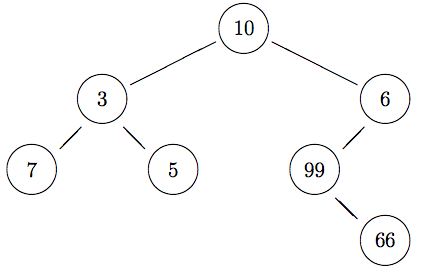

This homework is to be done individually. You may discuss problems with fellow students, but all submitted work must be entirely your own, and should not be from any other course, present, past, or future. If you use a solution from another source you must cite it — this includes when that source is someone else helping you.
Please do not post your solutions on a public website or a public repository like GitHub.
All programming is to be done in OCaml v4.
Code your answers by modifying the file homework9.ml provided. Add your name, your email address, and any remarks that you wish to make to the instructor to the block comment at the head of the file.
Please do not change the types in the signature of the function stubs I provide. Doing so will make it impossible to load your code into the testing infrastructure, and make me unhappy.
Feel free to define helper functions if you need them.
Start a fresh OCaml shell.
Load your homework code via #use "homework9.ml";; to make sure that there will be no errors when I load your code.
If there are any error, do not submit. I can't test what I can't #use.
When you're ready to submit, send an email with your file homework9.ml as an attachment to olin.submissions@gmail.com with subject Homework 9 submission.
A binary tree is a tree in which every node has at most two children (a left child and a right child). A binary tree may be empty. We consider binary trees in which every node stores a value:

Here is an OCaml type for binary trees that can store values of type 'a at the nodes:
type 'a bintree =
| Empty
| Node of 'a * 'a bintree * 'a bintreeThe sample tree above can be constructed using
let sample =
Node(10, Node(3, Node(7, Empty, Empty),
Node(5, Empty, Empty)),
Node(6, Node(99, Empty,
Node(66, Empty, Empty)),
Empty))A function pbt (for print binary tree) has been provided to print an integer binary tree. (If you have other kinds of binary trees, then you're going to have to define your own printing function.)
# pbt sample;;
+--- 6
| | +--- 66
| +--- 99
10
| +--- 5
+--- 3
+--- 7
- : unit = ()It takes a bit of time to read this output easily, but it's basically the tree rotated counter-clockwise 90 degrees: the root is on the left (10), and the tree grows to the right. Create a few trees, and print them out to see what they look like.
Function over trees, just like functions over lists, are naturally recursive. That follows directly from the recursive nature of trees.
Code functions size and height of type 'a bintree -> int and a function sum of type int bintree -> int, which respectively return the total number of nodes, the height, and the sum of the values of a binary tree.
(Recall that the height of a tree is the number of nodes in its longest branch.)
# size Empty;;
- : int = 0
# size (Node(1,Empty,Empty));;
- : int = 1
# size sample;;
- : int = 7
# height Empty;;
- : int = 0
# height (Node(1,Empty,Empty));;
- : int = 1
# height sample;;
- : int = 4
# sum Empty;;
- : int = 0
# sum (Node(1,Empty,Empty));;
- : int = 1
# sum sample;;
- : int = 196Code a function leaves of type 'a bintree -> 'a list that returns the list of leaves of a tree from left to right, where a leaf is a node with no children.
# leaves Empty;;
- : 'a list = []
# leaves (Node(1,Empty,Empty));;
- : int list = [1]
# leaves (Node(1,Node(2,Empty,Empty),Node(3,Empty,Empty)));;
- : int list = [2; 3]
# leaves sample;;
- : int list = [7; 5; 66]Trees support higher-order functions similar to those for lists.
Code a function map of type ('a -> 'b) -> 'a bintree -> 'b bintree where map f t returns a new tree with the same shape as t but where the value of every node has been transformed via function f.
# map (fun x -> x * x) Empty;;
- : int bintree = Empty
# map (fun x -> x * x) (Node(2,Empty,Empty));;
- : int bintree = Node(4, Empty, Empty)
# pbt (map (fun x -> x * x) (Node(2,Node(3,Empty,Empty),Node(4,Empty,Empty))));;
+--- 16
4
+--- 9
- : unit = ()
# pbt (map (fun x -> x * x) sample);;
+--- 36
| | +--- 4356
| +--- 9801
100
| +--- 25
+--- 9
+--- 49
- : unit = ()You can define a fold function for tree structures that generalizes what fold_right does for lists. Intuitively, folding a tree means starting from the lowest nodes and "rolling up" the nodes by applying a function to the value of the nodes and the rolled up children, going up so that you roll up the whole tree into a final value. (In a similar way, you can think of fold_right as "rolling up" a list starting from the end of the list, at every step applying a function to the current element of the list and the rolled up rest of the list, going all the way to the beginning so that you roll up the whole list into a final value.)
Code a function fold of type ('a -> 'b -> 'b -> 'b) -> 'a bintree -> 'b -> 'b that does for binary trees what fold_right does for lists. In particular, fold f t b should apply function f to the root of tree t, being passed the value at the root and the folded left and right subtrees. Folding an empty tree should return base value b.
# fold (fun v l r -> v+l+r) Empty 0;;
- : int = 0
# fold (fun v l r -> v+l+r) (Node(1,Empty,Empty)) 0;;
- : int = 1
# fold (fun v l r -> v+l+r) (Node(1,Empty,Empty)) 10;;
- : int = 21
# fold (fun v l r -> v+l+r) (Node(1,Node(2,Empty,Empty),Node(3,Empty,Empty))) 0;;
- : int = 6
# fold (fun v l r -> v+l+r) sample 0;;
- : int = 196A traversal for a tree is a listing of the values in the tree in some specific order. A preorder traversal lists the value of a node before the values of the nodes of its subtrees; a postorder traversal lists the values of a node after the values of its subtrees; and an inorder traversal lists the value of a node before the values of its right subtree but after the values of its left subtree.
Code function preorder, postorder, and inorder, each of type 'a bintree -> 'a list, which return the list of values in a binary tree according to the given type of traversal. Try to implement these functions using fold.
# preorder Empty;;
- : 'a list = []
# preorder (Node(1,Empty,Empty));;
- : int list = [1]
# preorder (Node(1,Node(2,Empty,Empty),Node(3,Empty,Empty)));;
- : int list = [1; 2; 3]
# preorder sample;;
- : int list = [10; 3; 7; 5; 6; 99; 66]
# postorder Empty;;
- : 'a list = []
# postorder (Node(1,Empty,Empty));;
- : int list = [1]
# postorder (Node(1,Node(2,Empty,Empty),Node(3,Empty,Empty)));;
- : int list = [2; 3; 1]
# postorder sample;;
- : int list = [7; 5; 3; 66; 99; 6; 10]
# inorder Empty;;
- : 'a list = []
# inorder (Node(1,Empty,Empty));;
- : int list = [1]
# inorder (Node(1,Node(2,Empty,Empty),Node(3,Empty,Empty)));;
- : int list = [2; 1; 3]
# inorder sample;;
- : int list = [7; 3; 5; 10; 99; 66; 6]A binary search tree is a binary tree with the following property: for every node N in the tree, every node in the left subtree of N has value less than the value at N, and every node in the right subtree of N has value greater than the value at N.
Code a function is_bst of type 'a bintree -> bool where is_bst t returns true exactly when t has the binary search tree property.
# is_bst Empty;;
- : bool = true
# is_bst (Node (10, Empty, Empty));;
- : bool = true
# is_bst (Node (10, Node (5, Empty, Empty), Empty));;
- : bool = true
# is_bst (Node (10, Empty, Node (20, Empty, Empty)));;
- : bool = true
# is_bst (Node (10, Node (5, Empty, Empty), Node(20, Empty, Empty)));;
- : bool = true
# is_bst (Node (10, Node(5, Node (2, Empty, Empty), Node(7, Empty, Empty)), Node (20, Node (15, Empty, Empty), Node (30, Empty, Empty)));;
- : bool = true
# is_bst (Node (10, Node(15, Node (2, Empty, Empty), Node(7, Empty, Empty)), Node (20, Node (15, Empty, Empty), Node (30, Empty, Empty))));;
- : bool = false
# is_bst (Node (10, Node(5, Node (6, Empty, Empty), Node(7, Empty, Empty)), Node (20, Node (15, Empty, Empty), Node (30, Empty, Empty))));;
- : bool = false
# is_bst (Node (10, Node(5, Node (2, Empty, Empty), Node(3, Empty, Empty)), Node (20, Node (15, Empty, Empty), Node (30, Empty, Empty))));;
- : bool = false
# is_bst (Node (10, Node(5, Node (2, Empty, Empty), Node(7, Empty, Empty)), Node (0, Node (15, Empty, Empty), Node (30, Empty, Empty))));;
- : bool = false
# is_bst (Node (10, Node(5, Node (2, Empty, Empty), Node(7, Empty, Empty)), Node (20, Node (25, Empty, Empty), Node (30, Empty, Empty))));;
- : bool = false
# is_bst (Node (10, Node(5, Node (2, Empty, Empty), Node(7, Empty, Empty)), Node (20, Node (5, Empty, Empty), Node (30, Empty, Empty))));;
- : bool = false
# is_bst (Node (10, Node(5, Node (2, Empty, Empty), Node(7, Empty, Empty)), Node (20, Node (15, Empty, Empty), Node (1, Empty, Empty))));;
- : bool = false
# is_bst (Node (10, Node(5, Node (2, Empty, Empty), Node(7, Empty, Empty)), Node (20, Node (15, Empty, Empty), Node (19, Empty, Empty))));;
- : bool = falseHint: you're probably going to need helper functions...
Consider the following type for (the abstract syntax tree of) arithmetic expressions:
type exp =
(* PART A *)
| Num of int
| Ident of string
| Plus of exp * exp
| Times of exp * exp
(* PART B *)
| EQ of exp * exp
| GT of exp * exp
| And of exp * exp
| Not of exp
| If of exp * exp * exp
(* PART C *)
| Letval of string * exp * exp
(* PART D *)
| Letfun of string * string * exp * exp
| App of string * expWe won't be using all constructors at once.
We will be writing an evaluation function that takes an expression written as an abstract syntax tree as above, and evaluates it down to a value. To deal with identifiers (variables) appearing in an expression, we supply an environment to the evaluation function which tells the evaluation which integer each identifier is mapped to. An environment is just a function string -> T where T is the type of values that the environment stores. Mostly, we'll be working with integer environments, where T is int. I've supplied you with two environment-manipulating functions:
let init : int env = (fun x -> 0)
let update (env:'a env) (x:string) (v:'a):'a env =
(fun y -> if (x=y) then v else env yValue init is an initial integer environment that maps every identifier to 0. Function update takes an environment env, an identifier x and a value v, and returns a new environment which maps x to v and maps every other identifier to whatever the original environment env maps it to. Thus, update init x 10 is an environment that maps x to 10 and every other identifier to 0.
Code a function eval of type exp -> int env -> int where eval exp env takes an expression exp using only constructors Num, Ident, Plus, and Times and an environment env and returns the result of evaluating exp with environment env to resolve identifiers. You can use failwith to return an error if you encounter another constructor.
Intuitively, a Num evaluates to the number itself, an idenfitier Ident evaluates to whatever the environment says it maps to, and Plus and Times evaluate to the result of adding or multiplying the values to which the subexpressions evaluate to.
# eval (Num 10) init;;
- : int = 10
# eval (Ident "x") init;;
- : int = 0
# eval (Plus(Num 10, Num 20)) init;;
- : int = 30
# eval (Plus(Num 10, Ident "x")) (update init "x" 2);;
- : int = 12
# eval (Times(Num 10, Ident "x")) (update init "x" 2);;
- : int = 20
# eval (Times(Plus(Num 10, Ident "y"), Ident "x")) (update init "x" 2);;
- : int = 20
# eval (Times(Plus(Num 10, Ident "x"), Ident "x")) (update init "x" 2);;
- : int = 24
# eval (Plus (Ident "x", Ident "y")) (update (update init "x" 42) "y" 10);;
- : int = 52If we interpret integer 0 as false and an integer different from 0 as true, we can handle Boolean operations and conditional evaluation in our expressions.
Intuitively, EQ evaluates to true (that is, any integer different from 0) if its two arguments evaluate to the same value, while GT evaluates to true (that is, any integer different from 0) if its first argument evaluates to a value greater than the second argument. They evaluate to false (0) otherwise.
Expression And evaluates to true (that is, any integer different from 0) if both its arguments evaluate to true, and evaluates to false (0) otherwise, while expression Not evaluates to true when its argument evaluates to false, and evaluates to false otherwise.
Expression If is more interesting. It first evaluates its first argument. If it is true, then it evaluates its second argument and uses that as the result of the overall evaluation of If. Otherwise, it evaluates its third argument, and uses that as the result of the overall evaluation of If.
Extend your function eval from part A so that you can also evaluate expressions using constructors EQ, GT, And, Not, and If.
# eval (EQ (Num 10,Num 10)) init;;
- : int = 1
# eval (EQ (Num 10,Num 0)) init;;
- : int = 0
# eval (EQ (Plus (Num 1,Num 2), Num 2)) init;;
- : int = 0
# eval (GT (Num 10,Num 10)) init;;
- : int = 0
# eval (GT (Num 10,Num 0)) init;;
- : int = 1
# eval (GT (Plus (Num 1,Num 2), Num 2)) init;;
- : int = 1
# eval (And (Num 1,Num 1)) init;;
- : int = 1
# eval (And (Num 1,Num 0)) init;;
- : int = 0
# eval (Not (Num 1)) init;;
- : int = 0
# eval (Not (Num 0)) init;;
- : int = 1
# eval (And (Num 1, Not (Num 1))) init;;
- : int = 0
# eval (And (Num 0, Not (Num 0))) init;;
- : int = 0
# eval (If (EQ (Ident "x", Num 42), Num 100, Num 200)) init;;
- : int = 200
# eval (If (EQ (Ident "x", Num 42), Num 100, Num 200)) (update init "x" 42);;
- : int = 100 We haven't really manipulated the environment during evaluation. We can easily define names for values during evaluation using constructor Letval.
Intuitively, expression Letval (x,e1,e2) evaluates e1 to an integer n, and then evaluates e2 in the environment updated to map identifier x to n.
Extend your function eval from part A and B so that you can also evaluate expressions using constructor Letval.
# eval (Letval ("x",Num 42, Plus (Ident "x",Num 1))) init;;
- : int = 43
# eval (Letval ("x",Num 42, Letval ("y",Num 10, Plus (Ident "x",Ident "y")))) init;;
- : int = 52
# eval (Letval ("x",Num 42, Letval ("y",Plus(Ident "x", Num 10),
Times (Ident "y", Num 2)))) init;;
- : int = 104
# eval (Letval ("x",Letval("y",Num 1,Plus(Ident "y",Num 2)),
Times(Ident "x",Num 4))) init;;
- : int = 12 Using Letval to create names for values is nice enough, but it would be really great if we could write functions in our expressions language that simplify the writing of complex expressions. Constructors Letfun and App let us do just that.
Intuitively, Letfun (f, x, e1, e2) defines a (nonrecursive) function called f that takes a single parameter x and has body e1. Calling f with an integer n amounts to evaluating e1 in an environment extended so that parameter x maps to n. The function definition is available during the evaluation of e2, whose result is the result of the overall evaluation of Letfun. Expression App is used to apply a function. It takes a function name (a string) and an expression, evaluates the expression to a value, and calls the function with that value to get the final result.
We can't store functions in the environment, because the environment can only store values of type int. So we are going to use a second environment, a function environment, to store values of type int -> int, and pass that function environment around along with the normal environment.
I have provided you with an initial function environment initF that assigns an undefined function to every function name.
Code a function evalF of type exp -> int env -> (int -> int) env -> int where evalF exp env fenv takes an expression exp using all the constructors in exp, an environment env, a function environment fenv, and returns the result of evaluating exp with environment env to resolve identifiers and function environment fenv to resolve function names. (No, you won't get to reuse eval. You'll need to rewrite the whole evaluation function from scratch.)
# evalF (Letfun ("square", "x", Times(Ident "x", Ident "x"),
App("square", Num 10))) init initF;;
- : int = 100
# evalF (Letfun ("square", "x", Times(Ident "x", Ident "x"),
Letfun ("double", "y", Times(Num 2, Ident "y"),
App ("double", App ("square", Num 42))))) init initF;;
- : int = 3528Oh, and congratulations! You're halfway through writing an interpreter for OCaml.